ابتدا صورت اصلی کتاب نمایش داده شده؛ مراحل تعاملی و پاسخها با باز کردن کادرهای پایین قابل بررسیاند. فصل ۱ چهارگزینهای ندارد؛ فصل ۲ چهارگزینهایهای کتاب را جدا دارد.
۲۸ سؤال
فصل ۱تمرینهای اصلیصفحه ۲
سؤال ۱ · دانش، آزمایش و فناوری
صورت اصلی سؤال کتاب
از بین کلمات داخل پرانتز، کلمه مناسب برای هر جمله را انتخاب کنید.
(آزمایش – کنجکاوی – فناوری – دانش – فرضیهسازی)
a) شما میتوانید با یادگیری انواع ........ و پرورش مهارتهای خود، به حل مسائلی بپردازید که در زندگی با آنها روبهرو میشوید.
b) با طراحی و انجام ........ و بررسی نتایج آن، درستی یا نادرستی پیشبینی خود را میتوان بررسی کرد.
c) تبدیل علم به عمل، ........ نام دارد.
مراحل پاسخ تعاملی · ۱ مرحلهجای خالی / تطبیق به ترتیب
مرحله ۱: جای خالیها را به ترتیب a، b و c کامل کن.
پاسخ: 1) a) یادگیری انواع ........ و پرورش مهارتها: دانش
2) b) طراحی و انجام ........ برای بررسی پیشبینی: آزمایش
3) c) تبدیل علم به عمل: فناوری
راهنمای اول: در هر جمله تشخیص بده درباره یادگرفتن، بررسی یک پیشبینی یا استفاده عملی از علم صحبت میشود.
راهنمای دوم: در a چیزی خواسته شده که میآموزیم؛ در b کاری لازم است که پیشبینی را با شواهد بیازماید؛ در c به کاربرد آموختهها برای رفع نیاز توجه کن.
توضیح: دانش به فهم مسائل کمک میکند؛ آزمایش پیشبینی را میآزماید؛ فناوری علم را در عمل به کار میگیرد.
فصل ۱تمرینهای اصلیصفحه ۲
سؤال ۲ · درست یا غلط؟
صورت اصلی سؤال کتاب
جملات صحیح را با (ص) و جملات غلط را با (غ) مشخص نمایید.
الف) سؤال کردن و تلاش برای یافتن پاسخ، از مراحل مهم در یادگیری علوم تجربی است.
ب) موفقیت و پیشرفت سریع علم و فناوری، نتیجه فعالیت مشترک دانشمندان و متخصصان با یکدیگر است.
ج) فناوریها فقط مفیدند و هیچ ضرری ندارند.
مراحل پاسخ تعاملی · ۱ مرحلهجای خالی / تطبیق به ترتیب
مرحله ۱: درستی هر عبارت را جداگانه مشخص کن.
الف) سؤال کردن و تلاش برای یافتن پاسخ
گزینهها: صحیح · غلط
ب) پیشرفت علم و فناوری حاصل همکاری متخصصان است
گزینهها: صحیح · غلط
ج) فناوریها فقط مفیدند و هیچ ضرری ندارند
گزینهها: صحیح · غلط
پاسخ، دو راهنما و توضیح
پاسخ: 1) الف) سؤال کردن و تلاش برای یافتن پاسخ: صحیح
2) ب) پیشرفت علم و فناوری حاصل همکاری متخصصان است: صحیح
3) ج) فناوریها فقط مفیدند و هیچ ضرری ندارند: غلط
راهنمای اول: سه موضوع را جدا بررسی کن: نقش پرسیدن، همکاری افراد با تخصصهای متفاوت و پیامدهای استفاده از فناوری.
راهنمای دوم: واژههای «فقط» و «هیچ» را با دقت بخوان. درباره هر ادعای کلی، یک نمونه واقعی را در ذهن خود امتحان کن؛ سپس درستی هر جمله را خودت تعیین کن.
توضیح: الف و ب صحیحاند. ج غلط است؛ فناوری میتواند فایده و زیان داشته باشد و شیوه استفاده از آن اهمیت دارد.
فصل ۱تمرینهای اصلیصفحه ۲
سؤال ۳ · روش حل مسائل زندگی
صورت اصلی سؤال کتاب
متخصصان علوم تجربی با بهرهگیری از چه چیزهایی، برای مسائل مختلف زندگی، پاسخ مناسبی پیدا میکنند؟ (سه مورد)
مراحل پاسخ تعاملی · ۱ مرحلهانتخاب چند پاسخ
مرحله ۱: سه مورد را انتخاب کن.
تعداد انتخاب لازم: ۳
تفکر
حفظ جواب بدون فهم مسئله
تجربه
حدس بدون بررسی
بهکار بستن مهارتهای گوناگون
پاسخ، دو راهنما و توضیح
پاسخ: تفکر؛ تجربه؛ بهکار بستن مهارتهای گوناگون
راهنمای اول: برای حل یک مسئله، حفظ کردن یک پاسخ آماده کافی نیست؛ باید مسئله را بررسی کرد و شواهد را به کار گرفت.
راهنمای دوم: سه نوع کمک را در نظر بگیر: بررسی ذهنی مسئله، آموختههای کارهای پیشین و توانایی انجام کارهای علمی. گزینههایی را انتخاب کن که به این سه نقش مربوطاند.
توضیح: متخصصان از تفکر، تجربه و مهارتهای گوناگون در برخورد با مسائل زندگی استفاده میکنند.
فصل ۱تمرینهای اصلیصفحه ۲
سؤال ۴ · پیشبینی و نتیجهگیری
صورت اصلی سؤال کتاب
متن زیر را به دقت بخوانید و به سؤالات مطرحشده پاسخ دهید.
معلم دانشآموزان را به آزمایشگاه برد. آنها بر روی میز تعدادی ماده را مشاهده کردند (نمک – براده آهن – جوهر نمک – اتانول – گوگرد – نشاسته – روغن مایع). معلم گفت میخواهیم ببینیم کدام در آب حل میشود و کدام حل نمیشود، ولی در ابتدا هر گروه با مشورت یکدیگر جواب سؤال را بر روی کاغذ بنویسد.
۱) این مرحله چه نام دارد؟ الف) نتیجهگیری ب) مشاهده ج) پیشبینی
سپس دانشآموزان با انجام آزمایش فهمیدند که نمک، اتانول و جوهر نمک در آب حل میشوند، ولی گوگرد، براده آهن، روغن مایع و نشاسته در آب حل نمیشوند.
۲) این مرحله آخر چه نام دارد؟ الف) طرح پرسش ب) نتیجهگیری ج) پیشبینی
مراحل پاسخ تعاملی · ۲ مرحلهانتخاب یک پاسخ
مرحله ۱: ۱) نوشتن جواب احتمالی، پیش از انجام آزمایش، کدام مرحله است؟
نتیجهگیری
مشاهده
پیشبینی
پاسخ، دو راهنما و توضیح
پاسخ: پیشبینی
راهنمای اول: ببین دانشآموزان پاسخ احتمالی را پیش از انجام آزمایش نوشتهاند یا پس از دیدن نتیجه آن.
راهنمای دوم: در این لحظه هنوز شواهد آزمایش در دست نیست؛ پس پاسخ گروه یک حدس قابل بررسی درباره اتفاقی است که ممکن است رخ دهد.
توضیح: گزینه ج: پیشبینی پاسخ احتمالی پیش از آزمایش است.
انتخاب یک پاسخ
مرحله ۲: ۲) پس از آزمایش، بیان آنچه از نتایج فهمیدهایم، کدام مرحله است؟
طرح پرسش
نتیجهگیری
پیشبینی
پاسخ، دو راهنما و توضیح
پاسخ: نتیجهگیری
راهنمای اول: در بخش دوم، دانشآموزان آزمایش را انجام دادهاند و درباره حلشدن مواد اطلاعات به دست آوردهاند.
راهنمای دوم: مرحله موردنظر باید از یافتههای آزمایش برای پاسخ به پرسش اولیه استفاده کند؛ با دوباره حدس زدن یا صرفاً طرح یک پرسش تفاوت دارد.
توضیح: گزینه ب: نتیجهگیری بر پایه نتایج آزمایش انجام میشود.
فصل ۱تمرینهای اصلیصفحه ۲
سؤال ۵ · ترتیب روش علمی
صورت اصلی سؤال کتاب
با استفاده از کلمات داخل پرانتز، مراحل حل یک مسئله به روش علمی را به ترتیب کامل کنید. (فرضیهسازی – نتیجهگیری – آزمایش)
۱) مشاهده ۲) طرح پرسش ۳) ........ ۴) ........ ۵) ........
مراحل پاسخ تعاملی · ۱ مرحلهجای خالی / تطبیق به ترتیب
مرحله ۱: مشاهده و طرح پرسش انجام شدهاند؛ جای خالیهای مراحل ۳ تا ۵ را به ترتیب کامل کن.
مرحله ۳، پس از طرح پرسش
گزینهها: فرضیهسازی · نتیجهگیری · آزمایش
مرحله ۴، بررسی عملی فرضیه
گزینهها: فرضیهسازی · نتیجهگیری · آزمایش
مرحله ۵، استفاده از نتایج
گزینهها: فرضیهسازی · نتیجهگیری · آزمایش
پاسخ، دو راهنما و توضیح
پاسخ: 1) مرحله ۳، پس از طرح پرسش: فرضیهسازی
2) مرحله ۴، بررسی عملی فرضیه: آزمایش
3) مرحله ۵، استفاده از نتایج: نتیجهگیری
راهنمای اول: پس از طرح پرسش، هنوز لازم است یک پاسخ احتمالی پیشنهاد شود و راهی برای بررسی آن داشته باشیم.
راهنمای دوم: کاربرد هر واژه را در نظر بگیر: کدام به پاسخ احتمالی مربوط است، کدام آن را در عمل بررسی میکند و کدام به شواهد بهدستآمده تکیه دارد؟ ترتیب را از این رابطه پیدا کن.
توضیح: ترتیب این الگوی کتاب: مشاهده، طرح پرسش، فرضیهسازی، آزمایش، نتیجهگیری. در پژوهش واقعی ممکن است این مراحل تکرار شوند.
تصویر کامل پاسخ
در اپ پس از تکمیل همه قسمتهای سؤال نمایش داده میشود.
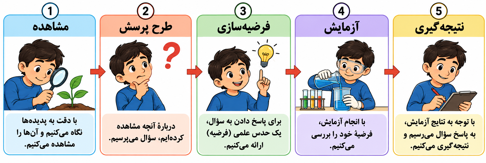
g7_ch01_q05_answer.png
فصل ۱تمرینهای اصلیصفحه ۲
سؤال ۶ · فناوری چیست؟
صورت اصلی سؤال کتاب
فناوری را تعریف کنید و سه مثال بزنید.
مراحل پاسخ تعاملی · ۲ مرحلهانتخاب یک پاسخ
مرحله ۱: کدام تعریف برای فناوری درست است؟
تبدیل علم به عمل
هر حدس بررسینشده
فقط حفظ کردن اطلاعات علمی
فقط مشاهده پدیدهها
پاسخ، دو راهنما و توضیح
پاسخ: تبدیل علم به عمل
راهنمای اول: شناخت یک پدیده علمی و استفاده از آن شناخت برای ساخت یک وسیله، دقیقاً یک کار نیستند.
راهنمای دوم: به ساخت دماسنج بر پایه شناخت تغییر دما فکر کن. تعریف مناسب باید رابطه میان شناخت علمی و رفع یک نیاز عملی را توضیح دهد.
توضیح: فناوری یعنی تبدیل علم به عمل؛ برای نمونه، کاربرد دانش در ساخت خودرو و رایانه.
انتخاب چند پاسخ
مرحله ۲: سه نمونه فناوری انتخاب کن. بیش از سه مثال درست در گزینهها وجود دارد.
تعداد انتخاب لازم: ۳
رایانه
ابر طبیعی
سنگ طبیعی
هواپیما
قطار
خودرو
پاسخ، دو راهنما و توضیح
پاسخ: خودرو؛ قطار؛ رایانه؛ هواپیما
راهنمای اول: در این مرحله دنبال چیزهایی باش که انسان آنها را برای رفع نیاز، طراحی و ساخته است.
راهنمای دوم: برای هر گزینه بپرس: آیا ساختن آن به کاربرد آموختهها و طراحی انسان نیاز داشته است یا یک پدیده طبیعی است؟ هر سه نمونه درست از گزینهها پذیرفته میشود.
توضیح: خودرو، قطار، رایانه و هواپیما نمونههای درستاند. انتخاب هر سه نمونه از این چهار مورد پذیرفته میشود.
فصل ۱تمرینهای اصلیصفحه ۲
سؤال ۷ · فایده و زیان رایانه
صورت اصلی سؤال کتاب
اختراع رایانه (کامپیوتر) یک فناوری محسوب میشود. یک فایده و یک ضرر این فناوری را بنویسید.
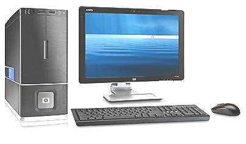
تصویر رایانه از همان صفحه کتاب g7_ch01_q07.png
تعبیر آسیب چشم در پاسخنامه به خستگی چشم در استفاده طولانی و نامناسب دقیقسازی شده است.
مراحل پاسخ تعاملی · ۲ مرحلهانتخاب یک پاسخ
مرحله ۱: یک فایده رایانه را انتخاب کن.
بینیاز شدن از فکر کردن
افزایش کمتحرکی
دسترسی به اطلاعات و ذخیرهسازی آنها
خستگی چشم در استفاده طولانی بدون استراحت
پاسخ، دو راهنما و توضیح
پاسخ: دسترسی به اطلاعات و ذخیرهسازی آنها
راهنمای اول: فایده یک وسیله، کاری است که با استفاده مناسب از آن بهتر یا آسانتر انجام میدهیم.
راهنمای دوم: یک تحقیق درسی و نگهداری پروندههای آن را در نظر بگیر. ببین کدام گزینه به انجام چنین کاری کمک میکند، نه اینکه خودش پیامد استفاده نامناسب باشد.
توضیح: دسترسی به اطلاعات اینترنت و ذخیرهسازی اطلاعات از فایدههای رایانهاند.
انتخاب یک پاسخ
مرحله ۲: کدام مورد میتواند پیامد استفاده طولانی و نامناسب از رایانه باشد؟
بهبود قطعی همه مهارتهای بدنی
کمتحرکی و خستگی چشم
بینیاز شدن از استراحت
از بین رفتن همه اشتباهات علمی
پاسخ، دو راهنما و توضیح
پاسخ: کمتحرکی و خستگی چشم
راهنمای اول: خود وسیله را از شیوه استفاده از آن جدا کن؛ سؤال درباره استفاده طولانی و نامناسب است.
راهنمای دوم: کار کردن بدون وقفه و نشستن طولانی را در نظر بگیر. ببین کدام گزینه با فشار ناشی از این شیوه استفاده بر بدن ارتباط دارد.
توضیح: کمتحرکی و خستگی چشم نمونههایی از پیامدهای استفاده نامناسباند. این پاسخ، تعبیر «ضعیف شدن چشم» در پاسخنامه را دقیقتر بیان میکند.
فصل ۱تمرینهای اصلیصفحه ۲
سؤال ۸ · شاخههای علوم تجربی
صورت اصلی سؤال کتاب
چهار شاخه علوم تجربی را نام ببرید.
مراحل پاسخ تعاملی · ۱ مرحلهانتخاب چند پاسخ
مرحله ۱: چهار شاخه علوم تجربی را انتخاب کن.
تعداد انتخاب لازم: ۴
تاریخ
طالعبینی
زیستشناسی
شیمی
زمینشناسی
فیزیک
پاسخ، دو راهنما و توضیح
پاسخ: فیزیک؛ شیمی؛ زیستشناسی؛ زمینشناسی
راهنمای اول: شاخههای موردنظر، بخشهای اصلی مطالعه طبیعتاند؛ آنها را از هنر، ورزش یا مهارتهای عمومی جدا کن.
راهنمای دوم: موضوعها را به چهار حوزه تقسیم کن: مواد و تغییرات آنها، جانداران، زمین، و پدیدههایی مانند حرکت و انرژی. نام رشته مربوط به هر حوزه را از گزینهها پیدا کن.
توضیح: چهار شاخه موردنظر کتاب: فیزیک، شیمی، زیستشناسی و زمینشناسی.
فصل ۲تمرینهای اصلیصفحه ۳
سؤال ۱ · کمیتها و اندازهگیری
صورت اصلی سؤال کتاب
از بین کلمات داخل کادر، کلمه مناسب برای هر جمله را انتخاب کنید.
(طول – ظرفهای مدرج – جرم – ثانیه – فرضیهسازی – زمان – لیتر – اندازهگیری – حجم – کیلوگرم)
a) مقدار ماده تشکیلدهنده جسم، ........ نام دارد.
b) فاصله بین دو نقطه و مسافتی را که یک جسم طی میکند، با یکای ........ اندازه میگیریم.
c) یک ........ برابر حجم ظرف مکعبیشکل به طول، عرض و ارتفاع ۱۰ سانتیمتر است، یعنی معادل ۱۰۰۰ سانتیمتر مکعب است.
d) از ........ برای اندازهگیری حجم مقدارهای کم مایع استفاده میکنیم.
e) یک مرحله مهم برای جمعآوری اطلاعات، ........ است که دقت آن به دقت شخص و دقت وسیله بستگی دارد.
f) برای اینکه بتوانیم به سؤال «چه وقت» و «چه مدت» پاسخ دهیم، ........ را اندازه میگیریم.
g) یکای اندازهگیری زمان، ........ است.
در بخش b، منظور نام کمیتِ فاصله و مسافت است؛ تفاوت کمیت و یکا در توضیح پاسخ روشن شده است.
مراحل پاسخ تعاملی · ۱ مرحلهجای خالی / تطبیق به ترتیب
مرحله ۱: هفت جای خالی را با واژههای کادر، به ترتیب کامل کن. در بخش b، نام «کمیت» فاصله و مسافت خواسته شده است؛ واژه «یکا» در متن کتاب دقیق نیست.
a) مقدار ماده تشکیلدهنده جسم
گزینهها: طول · ظرفهای مدرج · جرم · ثانیه · فرضیهسازی · زمان · لیتر · اندازهگیری · حجم · کیلوگرم
b) نام کمیتی که فاصله و مسافت را بیان میکند
گزینهها: طول · ظرفهای مدرج · جرم · ثانیه · فرضیهسازی · زمان · لیتر · اندازهگیری · حجم · کیلوگرم
c) حجم مکعب با ضلع ۱۰ سانتیمتر
گزینهها: طول · ظرفهای مدرج · جرم · ثانیه · فرضیهسازی · زمان · لیتر · اندازهگیری · حجم · کیلوگرم
d) وسیله اندازهگیری حجم مقدار کم مایع
گزینهها: طول · ظرفهای مدرج · جرم · ثانیه · فرضیهسازی · زمان · لیتر · اندازهگیری · حجم · کیلوگرم
e) مرحله جمعآوری اطلاعات وابسته به دقت شخص و وسیله
گزینهها: طول · ظرفهای مدرج · جرم · ثانیه · فرضیهسازی · زمان · لیتر · اندازهگیری · حجم · کیلوگرم
f) کمیت مربوط به چه وقت و چه مدت
گزینهها: طول · ظرفهای مدرج · جرم · ثانیه · فرضیهسازی · زمان · لیتر · اندازهگیری · حجم · کیلوگرم
g) یکای اندازهگیری زمان
گزینهها: طول · ظرفهای مدرج · جرم · ثانیه · فرضیهسازی · زمان · لیتر · اندازهگیری · حجم · کیلوگرم
پاسخ، دو راهنما و توضیح
پاسخ: 1) a) مقدار ماده تشکیلدهنده جسم: جرم
2) b) نام کمیتی که فاصله و مسافت را بیان میکند: طول
3) c) حجم مکعب با ضلع ۱۰ سانتیمتر: لیتر
4) d) وسیله اندازهگیری حجم مقدار کم مایع: ظرفهای مدرج
5) e) مرحله جمعآوری اطلاعات وابسته به دقت شخص و وسیله: اندازهگیری
6) f) کمیت مربوط به چه وقت و چه مدت: زمان
7) g) یکای اندازهگیری زمان: ثانیه
راهنمای اول: پیش از انتخاب واژه، مشخص کن هر جای خالی نام یک کمیت، یکا، وسیله یا روش جمعآوری اطلاعات را میخواهد.
راهنمای دوم: در c و g دنبال یکا باش، در d یک وسیله لازم است و در e یک کار علمی. در a، b و f باید نام کمیت را از کاربردی که جمله شرح داده پیدا کنی.
توضیح: به ترتیب: جرم، طول، لیتر، ظرفهای مدرج، اندازهگیری، زمان، ثانیه. در متن b واژه «یکا» دقیق نیست: طول کمیت است و متر یکای آن است.
فصل ۲تمرینهای اصلیصفحه ۳
سؤال ۲ · جدول کمیتها
صورت اصلی سؤال کتاب
جدول زیر را تکمیل کنید.
ستونها: کمیت | تعریف | یکا (واحد) | وسیله اندازهگیری
جرم | ........ | ........ | ........
وزن | ........ | ........ | ........
حجم | ........ | سانتیمتر مکعب، متر مکعب، لیتر، میلیلیتر و سیسی (cc) | ظروف مدرج و محاسبات ریاضی
........ | مقدار جرمی که در حجم معینی از یک جسم وجود دارد (نسبت جرم جسم به حجم آن) | ........ | محاسبات ریاضی
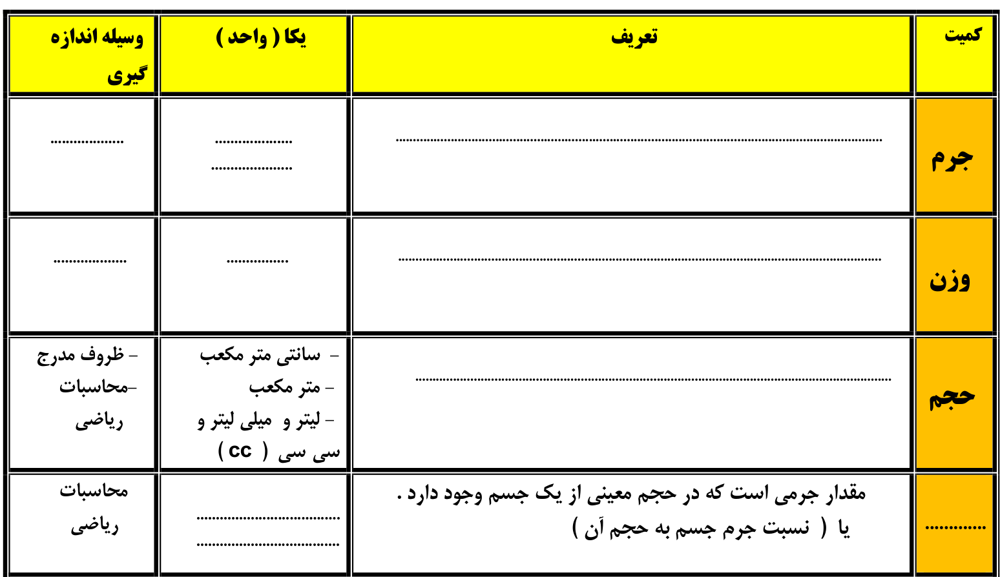
جدول اصلی کتاب؛ چهار ردیف و چهار ستون، بدون پاسخ g7_ch02_q02.pngمراحل پاسخ تعاملی · ۴ مرحلهجای خالی / تطبیق به ترتیب
مرحله ۱: ردیف جرم: تعریف، یکا و وسیله را به ترتیب کامل کن.
تعریف جرم
گزینهها: مقدار ماده تشکیلدهنده جسم · نیروی جاذبه زمین بر جسم · مقدار فضای اشغالشده
یکای جرم
گزینهها: کیلوگرم و گرم · نیوتون · متر
وسیله اندازهگیری جرم
گزینهها: ترازو · نیروسنج · زمانسنج
پاسخ، دو راهنما و توضیح
پاسخ: 1) تعریف جرم: مقدار ماده تشکیلدهنده جسم
2) یکای جرم: کیلوگرم و گرم
3) وسیله اندازهگیری جرم: ترازو
راهنمای اول: جرم را از اثر گرانش جدا کن: مقدار ماده یک جسم با جابهجایی آن به ماه تغییر نمیکند.
راهنمای دوم: تعریف، یکا و وسیله این ردیف باید همگی مقدار ماده را بیان کنند. گزینههای مربوط به کشش یا نیروی گرانشی برای این ردیف مناسب نیستند.
توضیح: جرم مقدار ماده تشکیلدهنده جسم است؛ با کیلوگرم و گرم بیان میشود و با ترازو اندازهگیری میشود.
جای خالی / تطبیق به ترتیب
مرحله ۲: ردیف وزن: تعریف، یکا و وسیله را به ترتیب کامل کن.
تعریف وزن
گزینهها: نیروی گرانشی زمین بر جسم · مقدار ماده تشکیلدهنده جسم · نسبت جرم به حجم
یکای وزن
گزینهها: نیوتون · کیلوگرم · لیتر
وسیله اندازهگیری وزن
گزینهها: نیروسنج · ترازو · ظرف مدرج
پاسخ، دو راهنما و توضیح
پاسخ: 1) تعریف وزن: نیروی گرانشی زمین بر جسم
2) یکای وزن: نیوتون
3) وسیله اندازهگیری وزن: نیروسنج
راهنمای اول: در این ردیف درباره اثر گرانش بر جسم صحبت میکنیم؛ این کمیت با مقدار ماده تفاوت دارد.
راهنمای دوم: تعریف را با ماهیت نیرو هماهنگ کن. یکا و وسیلهای هم لازم است که بتوانند اثر کشش یا نیرو را نشان دهند، نه فقط مقدار ماده را.
توضیح: وزن نیروی گرانشی واردشده از طرف زمین بر جسم است؛ یکای آن نیوتون و وسیله سنجش آن نیروسنج است.
انتخاب یک پاسخ
مرحله ۳: ردیف حجم: کدام تعریف درست است؟
مقدار ماده تشکیلدهنده جسم
نیروی زمین بر جسم
مقدار فضایی که یک ماده اشغال میکند
نسبت جرم به حجم
پاسخ، دو راهنما و توضیح
پاسخ: مقدار فضایی که یک ماده اشغال میکند
راهنمای اول: دو جسم میتوانند مقدار ماده یکسانی داشته باشند اما یکی فضای بیشتری بگیرد.
راهنمای دوم: به بخشی از فضای ظرف که مایع پر میکند فکر کن. تعریف این ردیف باید درباره اندازه آن فضا باشد، نه درباره گرانش یا مقدار ماده.
توضیح: حجم مقدار فضایی است که یک ماده اشغال میکند.
جای خالی / تطبیق به ترتیب
مرحله ۴: ردیف آخر: نام کمیت و یکای آن را کامل کن.
کمیتِ نسبت جرم به حجم
گزینهها: چگالی · جرم · وزن · زمان
یکای چگالی
گزینهها: گرم بر سانتیمتر مکعب یا کیلوگرم بر متر مکعب · نیوتون · سانتیمتر مکعب
پاسخ، دو راهنما و توضیح
پاسخ: 1) کمیتِ نسبت جرم به حجم: چگالی
2) یکای چگالی: گرم بر سانتیمتر مکعب یا کیلوگرم بر متر مکعب
راهنمای اول: دو جسم با حجم یکسان را تصور کن که جرمهای متفاوت دارند؛ این ردیف تفاوت آنها را با نسبت دو کمیت بیان میکند.
راهنمای دوم: برای انتخاب یکا، به صورت و مخرج نسبت توجه کن: یکای صورت مربوط به جرم و یکای مخرج مربوط به حجم است. نام کمیت را هم با همین تعریف تطبیق بده.
توضیح: کمیت چگالی است؛ یکاهای رایج آن گرم بر سانتیمتر مکعب و کیلوگرم بر متر مکعباند.
تصویر کامل پاسخ
در اپ پس از تکمیل همه قسمتهای سؤال نمایش داده میشود.
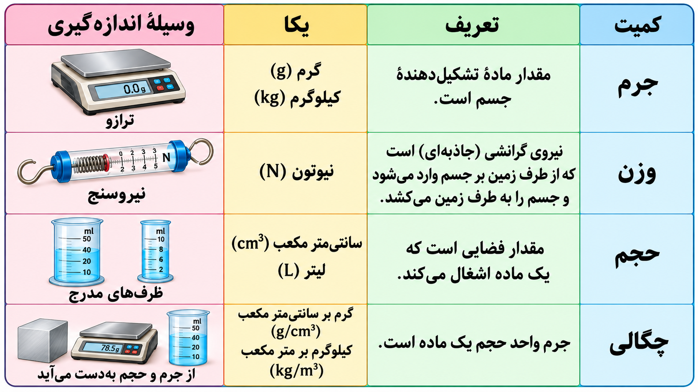
g7_ch02_q02_answer.png
فصل ۲تمرینهای اصلیصفحه ۳
سؤال ۳ · گرم یا کیلوگرم؟
صورت اصلی سؤال کتاب
چرا جرم بعضی چیزها (مانند سیدی، یک موز، یک مداد) را با گرم و جرم بعضی چیزهای دیگر (مانند گوسفند و لپتاپ) را با کیلوگرم بیان میکنیم؟
مراحل پاسخ تعاملی · ۱ مرحلهانتخاب یک پاسخ
مرحله ۱: دلیل انتخاب گرم یا کیلوگرم چیست؟
جسم کوچک وزن ندارد.
نوع یکا مقدار ماده را عوض میکند.
جسم سنگین اصلاً با گرم بیان نمیشود.
برای بیان سادهتر و قابلفهمتر، یکای مناسب اندازه جرم را انتخاب میکنیم.
پاسخ، دو راهنما و توضیح
پاسخ: برای بیان سادهتر و قابلفهمتر، یکای مناسب اندازه جرم را انتخاب میکنیم.
راهنمای اول: تغییر یکا، مقدار ماده یک جسم را تغییر نمیدهد؛ فقط عددی که برای بیان آن مینویسیم عوض میشود.
راهنمای دوم: یک کیلوگرم برابر هزار گرم است. برای یک جسم سبک یا سنگین، ببین کدام بیان به عددی با رقمهای مناسبتر و خواندن آسانتر میرسد.
توضیح: جرمهای کوچک معمولاً با گرم و جرمهای بزرگتر با کیلوگرم بیان میشوند تا عددها و مقایسهها راحتتر باشند. هر کیلوگرم ۱۰۰۰ گرم است.
فصل ۲تمرینهای اصلیصفحه ۴
سؤال ۴ · جرم و وزن روی زمین
صورت اصلی سؤال کتاب
هر کدام از اجسام زیر، تقریباً معادل چند نیوتون وزن دارند؟
الف) یک صندلی ۶ کیلوگرمی
ب) یک تلفن همراه ۲۰۰ گرمی
ج) یک کتاب ۶۰۰ گرمی
د) یک موتورسیکلت ۳۰۰ کیلوگرمی
مراحل پاسخ تعاملی · ۱ مرحلهجای خالی / تطبیق به ترتیب
مرحله ۱: با تقریب کتاب، هر کیلوگرم جرم روی زمین حدود ۱۰ نیوتون وزن دارد؛ چهار پاسخ را به ترتیب کامل کن.
پاسخ: 1) الف) صندلی ۶ کیلوگرمی: ۶۰ نیوتون
2) ب) تلفن همراه ۲۰۰ گرمی: ۲ نیوتون
3) ج) کتاب ۶۰۰ گرمی: ۶ نیوتون
4) د) موتورسیکلت ۳۰۰ کیلوگرمی: ۳۰۰۰ نیوتون
راهنمای اول: در رابطه تقریبی این سؤال، جرم باید بر حسب کیلوگرم باشد؛ پس ابتدا یکای دادههای هر ردیف را بررسی کن.
راهنمای دوم: برای تبدیل گرم به کیلوگرم، عدد را بر هزار تقسیم کن. سپس با نسبت یک کیلوگرم به حدود ده نیوتون، وزن هر مورد را جداگانه به دست آور.
توضیح: وزن تقریبی روی زمین: ۶×۱۰=۶۰، ۰٫۲×۱۰=۲، ۰٫۶×۱۰=۶ و ۳۰۰×۱۰=۳۰۰۰ نیوتون. تقریب علمی دقیقتر برای زمین نزدیک ۹٫۸ نیوتون بر کیلوگرم است.
فصل ۲تمرینهای اصلیصفحه ۴
سؤال ۵ · یکاهای طول
صورت اصلی سؤال کتاب
یکاهای متداول طول را نام ببرید.
مراحل پاسخ تعاملی · ۱ مرحلهانتخاب چند پاسخ
مرحله ۱: چهار یکای متداول طول را انتخاب کن.
تعداد انتخاب لازم: ۴
متر
سانتیمتر
کیلومتر
میلیمتر
ثانیه
گرم
پاسخ، دو راهنما و توضیح
پاسخ: میلیمتر؛ سانتیمتر؛ متر؛ کیلومتر
راهنمای اول: یکای طول باید فاصله را بیان کند؛ یکاهای جرم، زمان یا حجم را کنار بگذار.
راهنمای دوم: برای اندازههای بسیار کوچک، وسایل معمولی، فضای یک حیاط و فاصلههای بزرگ، مقیاسهای متفاوتی از خانواده یکاهای طول لازم است.
توضیح: یکاهای متداول موردنظر کتاب: میلیمتر، سانتیمتر، متر و کیلومتر.
فصل ۲تمرینهای اصلیصفحه ۴
سؤال ۶ · یکای مناسب هر طول
صورت اصلی سؤال کتاب
طول هر کدام از موارد زیر را با چه یکایی اندازه میگیریم؟ چرا؟
الف) قطر نوک مداد
ب) مسافت اصفهان تا تهران
ج) طول خودکار
د) طول حیاط مدرسه
مراحل پاسخ تعاملی · ۲ مرحلهجای خالی / تطبیق به ترتیب
مرحله ۱: برای هر مورد، یکای مناسب را انتخاب کن.
الف) قطر نوک مداد
گزینهها: متر · میلیمتر · کیلومتر · سانتیمتر
ب) مسافت اصفهان تا تهران
گزینهها: متر · میلیمتر · کیلومتر · سانتیمتر
ج) طول خودکار
گزینهها: متر · میلیمتر · کیلومتر · سانتیمتر
د) طول حیاط مدرسه
گزینهها: متر · میلیمتر · کیلومتر · سانتیمتر
پاسخ، دو راهنما و توضیح
پاسخ: 1) الف) قطر نوک مداد: میلیمتر
2) ب) مسافت اصفهان تا تهران: کیلومتر
3) ج) طول خودکار: سانتیمتر
4) د) طول حیاط مدرسه: متر
راهنمای اول: اندازه تقریبی هر مورد را تصور کن: بسیار ریز، به اندازه یک وسیله دستی، به اندازه یک حیاط، یا فاصله میان شهرها.
راهنمای دوم: از کوچکترین یکا تا بزرگترین، آنها را با این چهار مقیاس هماهنگ کن. هدف این است که عدد اندازهگیری، بسیار بزرگ یا بسیار کوچک نشود.
توضیح: به ترتیب: میلیمتر، کیلومتر، سانتیمتر و متر؛ یکای مناسب گزارش را سادهتر میکند.
انتخاب یک پاسخ
مرحله ۲: چرا یکاهای متفاوت انتخاب میکنیم؟
چون طول هر جسم فقط با یک یکا قابل بیان است.
چون یکای بزرگتر طول واقعی را زیاد میکند.
چون طول حیاط را نمیتوان به سانتیمتر تبدیل کرد.
تا اندازه هر طول را با عددی مناسب و قابلفهم بیان کنیم.
پاسخ، دو راهنما و توضیح
پاسخ: تا اندازه هر طول را با عددی مناسب و قابلفهم بیان کنیم.
راهنمای اول: همه این طولها را میتوان با یک یکای مشترک هم نوشت؛ پس علت انتخاب چند یکا، تغییر دادن طول واقعی نیست.
راهنمای دوم: به تعداد رقمهای لازم برای نوشتن فاصله بین دو شهر با یکای بسیار ریز فکر کن. کدام گزینه توضیح میدهد چرا معمولاً مقیاس متناسب با اندازه را برمیگزینیم؟
توضیح: یکاها قابل تبدیلاند؛ انتخاب متناسب با اندازه، فهم و مقایسه طولها را آسانتر میکند.
فصل ۲تمرینهای اصلیصفحه ۴
سؤال ۷ · اندازهگیری حجم سنگ
صورت اصلی سؤال کتاب
به وسیله یک استوانه مدرج و آب، آزمایشی طرح کنید که با انجام آن بتوانید حجم یک سنگ کوچک را اندازه بگیرید.
چپ: پیش از قرار دادن سنگ؛ راست: پس از آن. عددها نمونهاند؛ این سؤال فقط طراحی و ترتیب مراحل آزمایش را میخواهد. g7_ch02_q07.pngمراحل پاسخ تعاملی · ۱ مرحلهمرتبکردن مراحل
مرحله ۱: مراحل آزمایش را مرتب کن؛ سنگ باید کاملاً در آب قرار گیرد و آب از ظرف بیرون نریزد.
در اپ، ترتیب اولیه جابهجا است و با دکمههای بالا و پایین مرتب میشود.
مقداری آب در استوانه مدرج بریز.
حجم اولیه آب را بخوان و یادداشت کن.
سنگ را آرام داخل آب بگذار تا کاملاً زیر آب قرار گیرد.
حجم نهایی آب و سنگ را بخوان.
حجم اولیه را از حجم نهایی کم کن.
پاسخ، دو راهنما و توضیح
پاسخ: مقداری آب در استوانه مدرج بریز. ← حجم اولیه آب را بخوان و یادداشت کن. ← سنگ را آرام داخل آب بگذار تا کاملاً زیر آب قرار گیرد. ← حجم نهایی آب و سنگ را بخوان. ← حجم اولیه را از حجم نهایی کم کن.
راهنمای اول: سنگِ کاملاً زیر آب بخشی از فضای ظرف را میگیرد؛ باید تغییر عدد خواندهشده روی استوانه را پیدا کنیم.
راهنمای دوم: دو خواندن در دو زمان لازم است: آب بهتنهایی و پس از افزودن سنگ. تا هر دو خواندن ثبت نشده باشند، مقدار تغییر قابل محاسبه نیست.
توضیح: حجم سنگ برابر حجم نهایی منهای حجم اولیه است. عددها را در یک یکا بخوان؛ ۱ میلیلیتر برابر ۱ سانتیمتر مکعب است. برای این روش، سنگ باید در آب فرو رود و آب از ظرف سرریز نکند.
تصویر کامل پاسخ
در اپ پس از تکمیل همه قسمتهای سؤال نمایش داده میشود.
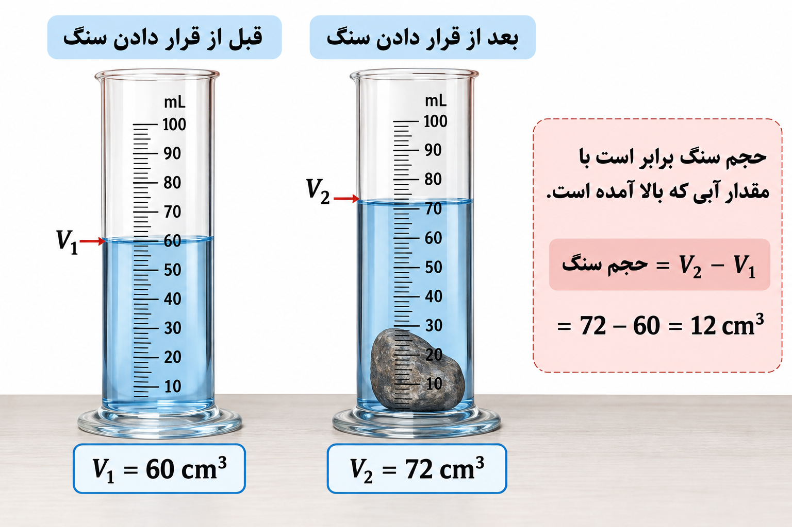
یک نمونه عددی برای توضیح روش آزمایش؛ مقدارهای این تصویر مثالاند، نه دادههای الزامی سؤال طراحی آزمایش. g7_ch02_q07_answer.png
فصل ۲تمرینهای اصلیصفحه ۴
سؤال ۸ · چگالی پاککن
صورت اصلی سؤال کتاب
جرم یک پاککن ۱۲ گرم و حجم آن ۸ سانتیمتر مکعب است. چگالی آن چقدر است؟
مراحل پاسخ تعاملی · ۱ مرحلهانتخاب یک پاسخ
مرحله ۱: چگالی پاککن چند گرم بر سانتیمتر مکعب است؟
۴ گرم بر سانتیمتر مکعب
۱٫۵ گرم بر سانتیمتر مکعب
۹۶ گرم بر سانتیمتر مکعب
۰٫۶۷ گرم بر سانتیمتر مکعب
پاسخ، دو راهنما و توضیح
پاسخ: ۱٫۵ گرم بر سانتیمتر مکعب
راهنمای اول: چگالی، جرم مربوط به یک واحد حجم را بیان میکند؛ عدد جرم و حجم را نباید با هم جمع کرد.
راهنمای دوم: اگر چند واحد حجم در مجموع جرم مشخصی داشته باشند، سهم یک واحد حجم را چگونه پیدا میکنی؟ واحد نتیجه باید از نوع جرم بر حجم باشد.
توضیح: چگالی = جرم ÷ حجم = ۱۲ ÷ ۸ = ۱٫۵ گرم بر سانتیمتر مکعب.
فصل ۲تمرینهای اصلیصفحه ۴
سؤال ۹ · حجم و چگالی سنگ
صورت اصلی سؤال کتاب
نیما جرم یک سنگ کوچک را با ترازو ۳۶ گرم اندازه گرفت. سپس آن را داخل یک استوانه مدرج که ۶۰ سانتیمتر مکعب آب داشت، انداخت. سطح آب روی ۷۲ سانتیمتر مکعب قرار گرفت.
الف) حجم سنگ چند سانتیمتر مکعب است؟
ب) چگالی سنگ را حساب کنید.
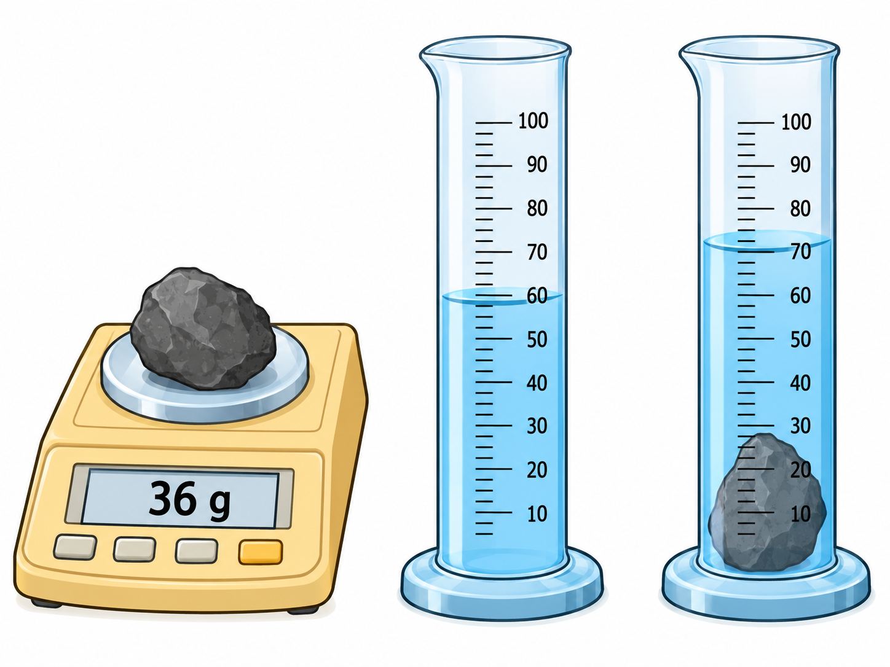
جرم سنگ ۳۶ گرم؛ استوانه چپ پیش از افزودن سنگ و استوانه راست پس از آن است. واحد درجههای استوانه میلیلیتر است و هر میلیلیتر برابر یک سانتیمتر مکعب است. g7_ch02_q09.png
تصویر اصلاحشده ارسالی با دادههای متن هماهنگ است: ۳۶ گرم، ۶۰ و ۷۲ سانتیمتر مکعب.
مراحل پاسخ تعاملی · ۲ مرحلهانتخاب یک پاسخ
مرحله ۱: الف) حجم خود سنگ چند سانتیمتر مکعب است؟
۱۲ سانتیمتر مکعب
۶۰ سانتیمتر مکعب
۷۲ سانتیمتر مکعب
۱۳۲ سانتیمتر مکعب
پاسخ، دو راهنما و توضیح
پاسخ: ۱۲ سانتیمتر مکعب
راهنمای اول: خواندن استوانه پس از افزودن سنگ، مربوط به آب و سنگ با هم است؛ تمام آن مقدار، حجم سنگ نیست.
راهنمای دوم: دو حجم را که با یک یکا نوشته شدهاند مقایسه کن. فقط بخشی که با ورود سنگ به خواندن اولیه افزوده شده، به سنگ مربوط است.
توضیح: حجم سنگ = ۷۲ − ۶۰ = ۱۲ سانتیمتر مکعب.
انتخاب یک پاسخ
مرحله ۲: ب) با استفاده از جرم سنگ و حجم قسمت الف، چگالی آن چند گرم بر سانتیمتر مکعب است؟
۰٫۵ گرم بر سانتیمتر مکعب
۰٫۳۳ گرم بر سانتیمتر مکعب
۱۲ گرم بر سانتیمتر مکعب
۳ گرم بر سانتیمتر مکعب
پاسخ، دو راهنما و توضیح
پاسخ: ۳ گرم بر سانتیمتر مکعب
راهنمای اول: برای سنگ، باید حجم خود سنگ را از قسمت الف به کار ببری؛ حجم کل آب و سنگ برای این محاسبه مناسب نیست.
راهنمای دوم: جرم سنگ را در صورت نسبت و حجم سنگ را در مخرج قرار بده. قبل از محاسبه، بررسی کن واحد نتیجه با جرم بر حجم هماهنگ باشد.
توضیح: چگالی = ۳۶ ÷ ۱۲ = ۳ گرم بر سانتیمتر مکعب.
تصویر کامل پاسخ
در اپ پس از تکمیل همه قسمتهای سؤال نمایش داده میشود.
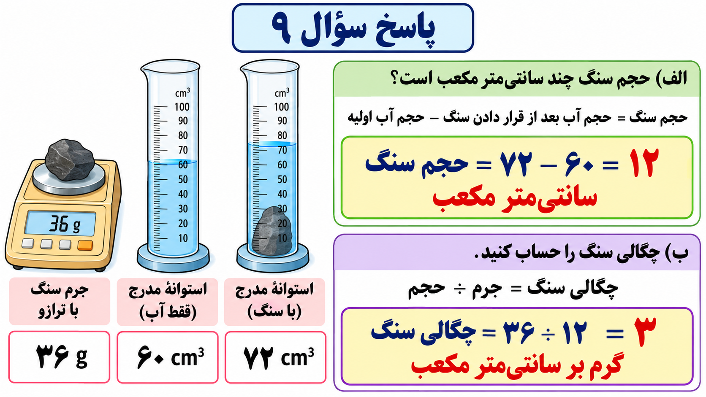
g7_ch02_q09_answer.png
فصل ۲تمرینهای اصلیصفحه ۵
سؤال ۱۰ · چگالی و شناوری
صورت اصلی سؤال کتاب
جرم یک جسم ۱۶۰ گرم و حجم آن ۴۰۰ سانتیمتر مکعب است.
الف) چگالی آن را حساب کنید.
ب) آیا این جسم در آب فرو میرود؟ چرا؟
مراحل پاسخ تعاملی · ۲ مرحلهانتخاب یک پاسخ
مرحله ۱: الف) چگالی جسم چقدر است؟
۴۰ گرم بر سانتیمتر مکعب
۵۶۰ گرم بر سانتیمتر مکعب
۰٫۴ گرم بر سانتیمتر مکعب
۲٫۵ گرم بر سانتیمتر مکعب
پاسخ، دو راهنما و توضیح
پاسخ: ۰٫۴ گرم بر سانتیمتر مکعب
راهنمای اول: دو داده این قسمت، جرم و حجم جسماند؛ برای یافتن جرم در یک واحد حجم باید نسبت مناسبی بسازی.
راهنمای دوم: جرم را بر حجم تقسیم کن. اگر تقسیم دشوار است، صورت و مخرج را بر یک عامل مشترک تقسیم کن؛ مقدار نسبت عوض نمیشود.
مرحله ۲: ب) اگر چگالی آب حدود ۱ گرم بر سانتیمتر مکعب باشد، کدام پاسخ درست است؟
بله؛ چون هر جسمی جرم دارد.
بله؛ چون چگالی جسم کمتر از آب است.
نمیتوان چگالی جسم را با آب مقایسه کرد.
خیر؛ چگالی جسم از آب کمتر است و روی آب شناور میشود.
پاسخ، دو راهنما و توضیح
پاسخ: خیر؛ چگالی جسم از آب کمتر است و روی آب شناور میشود.
راهنمای اول: برای پیشبینی شناوری، جرم جسم بهتنهایی کافی نیست؛ چگالی جسم و آب باید با یک یکا مقایسه شوند.
راهنمای دوم: جسم و مقداری آب با حجم برابر را تصور کن. جسمی که از آبِ همحجم خود سبکتر است میتواند شناور بماند؛ حالا نتیجه قسمت الف را با چگالی آب مقایسه کن.
توضیح: در مدل ساده این سؤال، جسم در آب فرو نمیرود، زیرا چگالی آن ۰٫۴ و از چگالی آب کمتر است.
تصویر کامل پاسخ
در اپ پس از تکمیل همه قسمتهای سؤال نمایش داده میشود.
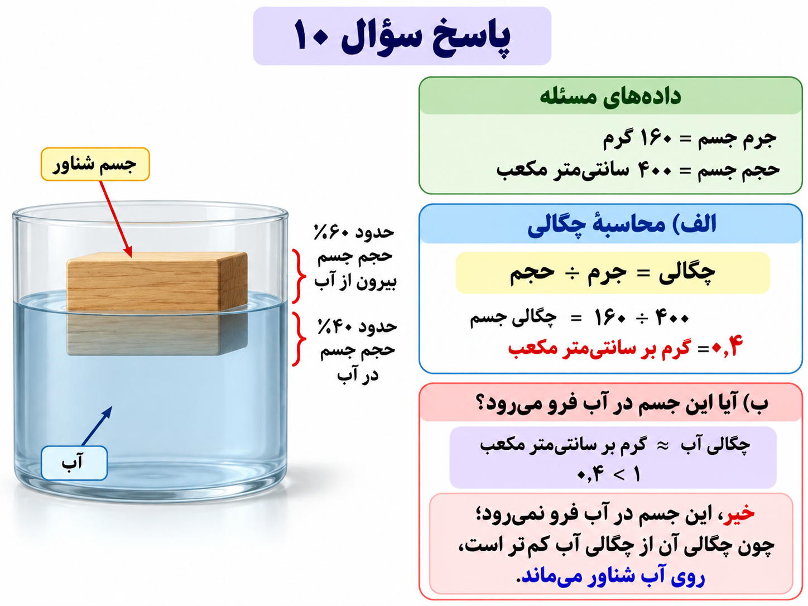
g7_ch02_q10_answer.png
فصل ۲تمرینهای اصلیصفحه ۵
سؤال ۱۱ · چگالی سه گلوله
صورت اصلی سؤال کتاب
سه گلوله A و B و C را در آب انداختهایم. وضعیت قرار گرفتن آنها در آب، در شکل مشخص است؛ برای مقایسه چگالی این سه گلوله نسبت به آب، در جاهای خالی از کلمات (بیشتر از – کمتر از – برابر) استفاده کنید.
چگالی گلوله A ........ آب است.
چگالی گلوله B ........ آب است.
چگالی گلوله C ........ آب است.
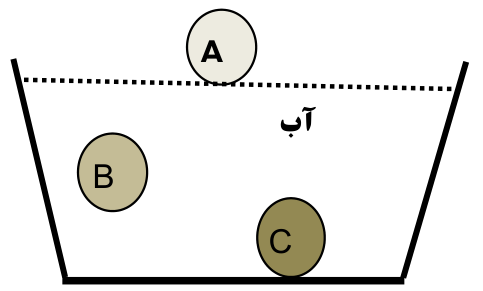
حرفهای A و B و C و خط سطح آب از شکل اصلی حفظ شدهاند. g7_ch02_q11.pngمراحل پاسخ تعاملی · ۱ مرحلهجای خالی / تطبیق به ترتیب
مرحله ۱: با توجه به محل گلولهها در شکل، نسبت چگالی هر کدام به آب را انتخاب کن.
گلوله A که روی آب شناور است
گزینهها: بیشتر از · کمتر از · برابر
گلوله B که درون آب معلق است
گزینهها: بیشتر از · کمتر از · برابر
گلوله C که به کف ظرف رسیده است
گزینهها: بیشتر از · کمتر از · برابر
پاسخ، دو راهنما و توضیح
پاسخ: 1) گلوله A که روی آب شناور است: کمتر از
2) گلوله B که درون آب معلق است: برابر
3) گلوله C که به کف ظرف رسیده است: بیشتر از
راهنمای اول: به حالت هر گلوله توجه کن: روی سطح، معلق درون آب، یا در کف. فرض سؤال این است که این حالتها پایدارند.
راهنمای دوم: برای گلوله معلق، بپرس اگر از آبِ همحجم خود سنگینتر یا سبکتر بود، چه حرکتی میکرد؟ برای گلوله سطح و گلوله کف هم همین مقایسه را انجام بده.
توضیح: A کمتر از آب، B برابر آب و C بیشتر از آب چگالی دارند. B در حالت معلقِ تعادلی در نظر گرفته شده است.
تصویر کامل پاسخ
در اپ پس از تکمیل همه قسمتهای سؤال نمایش داده میشود.
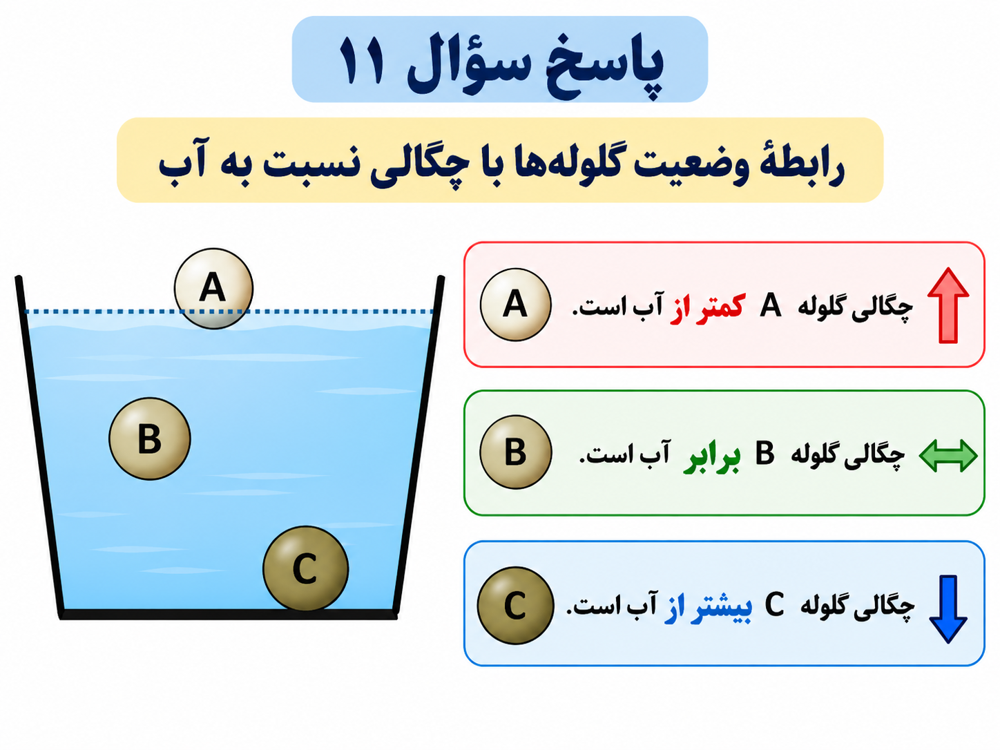
g7_ch02_q11_answer.png
فصل ۲تمرینهای اصلیصفحه ۵
سؤال ۱۲ · ساعت و زمانسنج
صورت اصلی سؤال کتاب
در مورد زمان به سؤالات زیر پاسخ دهید.
الف) برای اندازهگیری زمان از چه وسیلههایی استفاده میشود؟ (نام هر کدام را زیرشان بنویسید.)
ب) برای پاسخ دادن به سؤال «چه وقت» معمولاً از ........ استفاده میکنیم، ولی برای سؤال «چه مدت» از ........ استفاده میشود.
ج) یکاهای اندازهگیری زمان را که در زندگی روزمره از آنها استفاده میکنیم، نام ببرید.
نام وسیلههای شماره ۱ و ۲ را مطابق شمارههای زیر شکل انتخاب کن. g7_ch02_q12.pngمراحل پاسخ تعاملی · ۳ مرحلهجای خالی / تطبیق به ترتیب
مرحله ۱: الف) نام وسیله شماره ۱ و سپس وسیله شماره ۲ را انتخاب کن.
راهنمای اول: شمارههای ۱ و ۲ زیر تصویرها را بخوان. یکی وقت روز را نشان میدهد و دیگری مدت یک فعالیت را از شروع تا توقف میسنجد.
راهنمای دوم: وجود دکمه شروع و توقف را با کار هر وسیله مرتبط کن. نام آن را از گزینهها پیدا کن، بدون اینکه ترتیب شمارهها را با راست و چپ عوض کنی.
توضیح: وسیله شماره ۱ ساعت و وسیله شماره ۲ زمانسنج (کرنومتر) است. ساعت معمولاً وقت روز و زمانسنج مدت فعالیت را نشان میدهد.
جای خالی / تطبیق به ترتیب
مرحله ۲: ب) دو جای خالی را به ترتیب کامل کن.
برای پاسخ به «چه وقت»
گزینهها: زمانسنج (کرنومتر) · ساعت
برای پاسخ به «چه مدت»
گزینهها: زمانسنج (کرنومتر) · ساعت
پاسخ، دو راهنما و توضیح
پاسخ: 1) برای پاسخ به «چه وقت»: ساعت
2) برای پاسخ به «چه مدت»: زمانسنج (کرنومتر)
راهنمای اول: «چه وقت» یک زمان مشخص را میپرسد، اما «چه مدت» فاصله میان شروع و پایان یک فعالیت را میخواهد.
راهنمای دوم: زمان شروع کلاس و مدت دویدن یک مسابقه را مقایسه کن. برای هر کدام، وسیلهای را انتخاب کن که معمولاً همان نوع اطلاعات را میدهد.
توضیح: برای «چه وقت» معمولاً ساعت، و برای اندازهگیری «چه مدت» زمانسنج به کار میرود.
انتخاب چند پاسخ
مرحله ۳: ج) چهار یکای زمان روزمره را انتخاب کن؛ هر چهار انتخاب درست پذیرفته میشود.
تعداد انتخاب لازم: ۴
ساعت
دقیقه
کیلوگرم
سال
نیوتون
شبانهروز
ثانیه
پاسخ، دو راهنما و توضیح
پاسخ: ثانیه؛ دقیقه؛ ساعت؛ شبانهروز؛ سال
راهنمای اول: گزینهها باید بازههای زمانی را بیان کنند؛ نام وسیله یا یکای کمیت دیگر، یکای زمان نیست.
راهنمای دوم: به مقیاسهای کوتاه روی ابزار اندازهگیری و مقیاسهای بزرگتر در برنامه روزانه و تقویم فکر کن. از میان یکاهای درست، چهار مورد را انتخاب کن.
توضیح: ثانیه، دقیقه، ساعت، شبانهروز و سال یکاهای درستاند. پاسخنامه دقیقه، ساعت، شبانهروز و سال را مثال زده است؛ ثانیه هم صحیح است.
فصل ۲تمرینهای اصلیصفحه ۵
سؤال ۱۳ · دقت اندازهگیری
صورت اصلی سؤال کتاب
دقت اندازهگیری به چه عواملی بستگی دارد؟ (دو مورد)
مراحل پاسخ تعاملی · ۱ مرحلهانتخاب چند پاسخ
مرحله ۱: دو عامل را انتخاب کن.
تعداد انتخاب لازم: ۲
دقت شخص
نام فرد
دقت وسیله اندازهگیری
رنگ وسیله
پاسخ، دو راهنما و توضیح
پاسخ: دقت شخص؛ دقت وسیله اندازهگیری
راهنمای اول: میتوان با یک ابزار مناسب هم خواندن نادرست داشت؛ از طرف دیگر، خوب خواندن یک ابزار بسیار کمدقت کافی نیست.
راهنمای دوم: دو مثال را بررسی کن: نگاه کردن از زاویه نامناسب و فاصله زیاد درجههای ابزار. هر مثال به کدام عامل اندازهگیری مربوط است؟
توضیح: دقت اندازهگیری به دقت شخص و دقت وسیله اندازهگیری بستگی دارد.
فصل ۲تمرینهای اصلیصفحه ۵
سؤال ۱۴ · خواندن طول مداد
صورت اصلی سؤال کتاب
با توجه به اینکه دقت اندازهگیری خطکش ۱ سانتیمتر است، در شکلهای زیر طول مداد چند سانتیمتر گزارش میشود؟ چرا؟
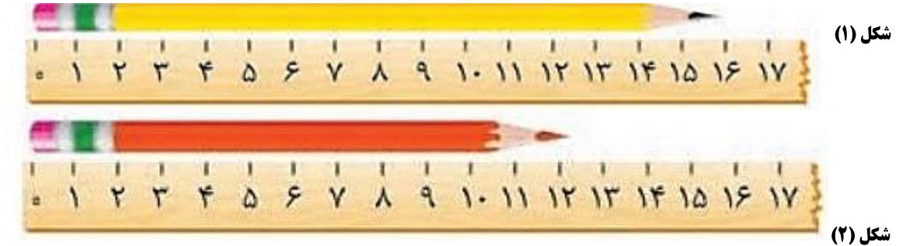
هر دو خطکش، صفر خطکش، نوک مدادها و شماره شکلهای ۱ و ۲ حفظ شدهاند. g7_ch02_q14.pngمراحل پاسخ تعاملی · ۲ مرحلهجای خالی / تطبیق به ترتیب
مرحله ۱: طول مدادها را با دقت خواستهشده کتاب، یعنی نزدیکترین سانتیمتر، گزارش کن.
پاسخ: 1) شکل ۱، مداد بالایی: ۱۶ سانتیمتر
2) شکل ۲، مداد پایینی: ۱۲ سانتیمتر
راهنمای اول: ابتدای مداد را با صفر خطکش مقایسه کن و بعد محل نوک آن را بخوان؛ طول از ابتدای مداد تا نوک آن است.
راهنمای دوم: برای هر شکل، دو عدد صحیح دو طرف نوک مداد را پیدا کن و فاصله نوک تا آنها را مقایسه کن. عدد نزدیکتر را در دقت خواستهشده انتخاب کن.
توضیح: طبق شکل و پاسخنامه: شکل ۱، ۱۶ سانتیمتر و شکل ۲، ۱۲ سانتیمتر است. گزارش باید متناسب با دقت خواستهشده باشد.
انتخاب یک پاسخ
مرحله ۲: علت این گزارش چیست؟
باید حتماً همیشه عدد کوچکتر را گزارش کنیم.
باید حتماً همیشه عدد بزرگتر را گزارش کنیم.
عدد مدادها را بدون نگاه به شکل حدس میزنیم.
عدد نزدیکتر را در حد دقت ۱ سانتیمتر گزارش میکنیم.
پاسخ، دو راهنما و توضیح
پاسخ: عدد نزدیکتر را در حد دقت ۱ سانتیمتر گزارش میکنیم.
راهنمای اول: بین مقدار تقریبی دیدهشده روی شکل و تعداد رقمهایی که سؤال برای گزارش میخواهد تفاوت وجود دارد.
راهنمای دوم: در این سؤال دقت یک سانتیمتر خواسته شده است؛ وجود جزئیات ریزتر در تصویر بهتنهایی مجوز نوشتن رقمهای اعشاری بیشتر نیست.
توضیح: با دقت ۱ سانتیمتر، به نزدیکترین سانتیمتر گزارش میکنیم؛ بنابراین ۱۶ و ۱۲ پاسخهای موردنظرند.
تصویر کامل پاسخ
در اپ پس از تکمیل همه قسمتهای سؤال نمایش داده میشود.
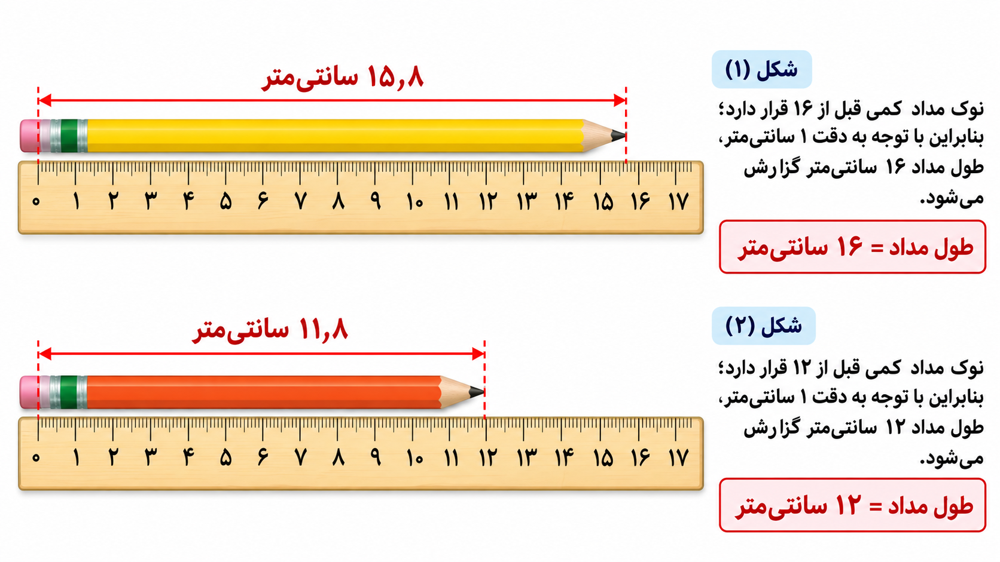
عددهای اعشاری این تصویر، روش گرد کردن را توضیح میدهند؛ گزارش خواستهشده سؤال در حد سانتیمتر کامل است. g7_ch02_q14_answer.png
فصل ۲تمرینهای اصلیصفحه ۶
سؤال ۱۵ · ابزارهای اندازهگیری
صورت اصلی سؤال کتاب
هر کدام از وسایل زیر چه نام دارد و چه چیزی را اندازه میگیرد؟
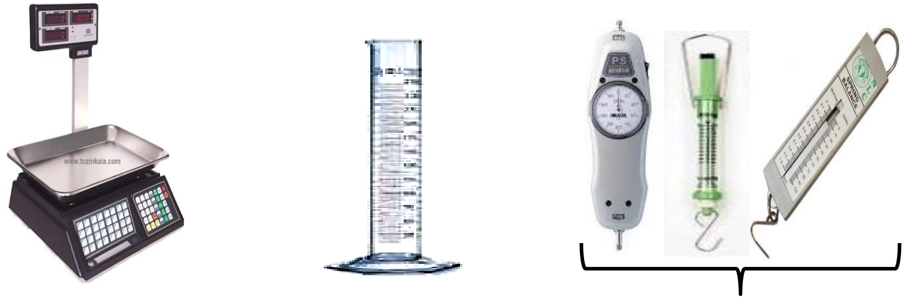
۱: ابزار سمت چپ؛ ۲: ابزار وسط؛ ۳: گروه سه ابزار سمت راست. پاسخها را به ترتیب همین شمارهها انتخاب کن. g7_ch02_q15.pngمراحل پاسخ تعاملی · ۲ مرحلهجای خالی / تطبیق به ترتیب
مرحله ۱: نام ابزارهای شماره ۱، ۲ و گروه شماره ۳ را به ترتیب انتخاب کن.
ابزار شماره 1
گزینهها: ترازو · انواع نیروسنج · استوانه مدرج · زمانسنج
ابزار شماره 2
گزینهها: ترازو · انواع نیروسنج · استوانه مدرج · زمانسنج
گروه ابزارهای شماره ۳
گزینهها: ترازو · انواع نیروسنج · استوانه مدرج · زمانسنج
پاسخ، دو راهنما و توضیح
پاسخ: 1) ابزار شماره 1: ترازو
2) ابزار شماره 2: استوانه مدرج
3) گروه ابزارهای شماره ۳: انواع نیروسنج
راهنمای اول: شمارههای ۱، ۲ و ۳ را با شکل ابزارها هماهنگ کن؛ شماره ۳ به گروه سه ابزار سمت راست اشاره دارد.
راهنمای دوم: به کفه شماره ۱، ظرف درجهدار شماره ۲ و فنر یا آویز ابزارهای شماره ۳ توجه کن. از شکل و روش کار، نام ابزار را پیدا کن.
توضیح: شماره ۱ ترازو، شماره ۲ استوانه مدرج و شماره ۳ انواع نیروسنج است.
جای خالی / تطبیق به ترتیب
مرحله ۲: کمیت اندازهگیریشده توسط شمارههای ۱، ۲ و ۳ را به ترتیب مشخص کن.
کمیت مربوط به شماره 1
گزینهها: جرم · حجم مایع · نیرو، مانند وزن · زمان
کمیت مربوط به شماره 2
گزینهها: جرم · حجم مایع · نیرو، مانند وزن · زمان
کمیت مربوط به شماره 3
گزینهها: جرم · حجم مایع · نیرو، مانند وزن · زمان
پاسخ، دو راهنما و توضیح
پاسخ: 1) کمیت مربوط به شماره 1: جرم
2) کمیت مربوط به شماره 2: حجم مایع
3) کمیت مربوط به شماره 3: نیرو، مانند وزن
راهنمای اول: جرم و وزن یک کمیت نیستند؛ همچنین خواندن یک ظرف درجهدار با اندازهگیری نیروی کشش تفاوت دارد.
راهنمای دوم: شماره ۱ برای مقدار ماده، شماره ۲ برای فضای اشغالشده در ظرف و شماره ۳ برای اثر کشش به کار میروند. این کاربردها را با نام کمیتهای گزینهها تطبیق بده.
توضیح: ترازو جرم، استوانه مدرج حجم مایع و نیروسنج نیروهایی مانند وزن را اندازه میگیرد؛ شمارههای شکل همین ترتیب را دارند.
فصل ۲چهارگزینهایصفحه ۶
سؤال ۱ · یکای جرم پرتقال
صورت اصلی سؤال کتاب
جرم یک عدد پرتقال را بهتر است با چه واحدی (یکا) بیان کنیم؟
الف) نیوتون
ب) کیلوگرم
ج) گرم
د) سانتیمتر مکعب
مراحل پاسخ تعاملی · ۱ مرحلهانتخاب یک پاسخ
مرحله ۱: گزینه درست را انتخاب کن.
نیوتون
کیلوگرم
گرم
سانتیمتر مکعب
پاسخ، دو راهنما و توضیح
پاسخ: گرم
راهنمای اول: کمیت پرسش، مقدار ماده پرتقال است؛ آن را با وزن یا حجم اشتباه نگیر.
راهنمای دوم: جرم یک پرتقال نسبتاً کم است. از میان یکاهای جرم، مقیاسی را انتخاب کن که این مقدار را با عدد معمولی و قابلفهم بیان کند.
توضیح: گزینه ج: گرم یکای مناسب جرم یک پرتقال است.
فصل ۲چهارگزینهایصفحه ۶
سؤال ۲ · وزن مهران
صورت اصلی سؤال کتاب
جرم مهران ۴۸ کیلوگرم است. وزن او تقریباً چند نیوتون است؟
الف) ۴۸
ب) ۴٫۸
ج) ۴۸۰
د) ۴۸۰۰
مراحل پاسخ تعاملی · ۱ مرحلهانتخاب یک پاسخ
مرحله ۱: گزینه درست را انتخاب کن.
۴۸
۴٫۸
۴۸۰
۴۸۰۰
پاسخ، دو راهنما و توضیح
پاسخ: ۴۸۰
راهنمای اول: وزن، اثر گرانش بر جسم است؛ عدد جرم بر حسب کیلوگرم را نباید بدون تبدیل، وزن بر حسب نیوتون نامید.
راهنمای دوم: در تقریب این فصل، هر کیلوگرم جرم روی زمین حدود ده نیوتون وزن دارد. با همین تناسب، برای جرم دادهشده محاسبه کن؛ نتیجه را خودت به دست آور.
توضیح: گزینه ج: ۴۸×۱۰=۴۸۰ نیوتون.
فصل ۲چهارگزینهایصفحه ۶
سؤال ۳ · نیروسنج و جسم ۱۰۰ گرمی
صورت اصلی سؤال کتاب
یک جسم ۱۰۰ گرمی را به یک نیروسنج (شکل مقابل) آویزان کردهایم. نیروسنج وزن آن را چند نیوتون نشان میدهد؟
الف) ۱
ب) ۱۰
ج) ۱۰۰
د) ۱۰۰۰
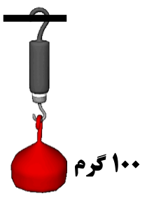
جسم ۱۰۰ گرمی و نیروسنج از شکل اصلی g7_ch02_mcq03.pngمراحل پاسخ تعاملی · ۱ مرحلهانتخاب یک پاسخ
مرحله ۱: گزینه درست را انتخاب کن.
۱
۱۰
۱۰۰
۱۰۰۰
پاسخ، دو راهنما و توضیح
پاسخ: ۱
راهنمای اول: نیروسنج، نیرو را نشان میدهد؛ نوشته روی جسم جرم آن بر حسب گرم است، نه وزن بر حسب نیوتون.
راهنمای دوم: ابتدا از رابطه هزار گرم برابر یک کیلوگرم استفاده کن. سپس جرم بر حسب کیلوگرم را با تقریب ده نیوتون برای هر کیلوگرم به وزن تبدیل کن.
توضیح: گزینه الف: ۰٫۱×۱۰=۱ نیوتون.
فصل ۲چهارگزینهایصفحه ۶
سؤال ۴ · لیتر و سانتیمتر مکعب
صورت اصلی سؤال کتاب
در یک ظرف یکلیتری، چند سانتیمتر مکعب آب قرار میگیرد تا کاملاً پر شود؟
الف) ۱۰۰۰۰
ب) ۱۰۰
ج) ۱۰
د) ۱۰۰۰
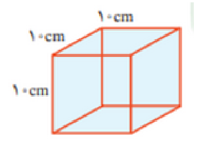
ظرف با سه ضلع ۱۰ سانتیمتری g7_ch02_mcq04.pngمراحل پاسخ تعاملی · ۱ مرحلهانتخاب یک پاسخ
مرحله ۱: گزینه درست را انتخاب کن.
۱۰۰۰۰
۱۰۰
۱۰
۱۰۰۰
پاسخ، دو راهنما و توضیح
پاسخ: ۱۰۰۰
راهنمای اول: به سه بعد ظرف مکعبی در شکل توجه کن؛ محاسبه حجم، با اندازهگیری فقط یک ضلع متفاوت است.
راهنمای دوم: حجم مکعب از ضرب طول، عرض و ارتفاع به دست میآید. هر سه طول را با یک یکا به کار ببر تا واحد حاصل، سانتیمتر مکعب شود.
دقت اندازهگیری یک ترازوی دیجیتالی (شکل مقابل) ۰٫۱ گرم است. کدام یک از موارد زیر نمیتواند اندازهگیری این ترازو باشد؟
الف) ۴ کیلوگرم
ب) ۲٫۳۶ گرم
ج) ۲۲۵٫۸ گرم
د) ۵٫۵ کیلوگرم
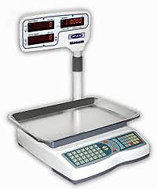
ترازوی دیجیتالی؛ علامت / در عددهای کتاب به صورت ممیز اعشاری نمایش داده شده است. g7_ch02_mcq05.pngمراحل پاسخ تعاملی · ۱ مرحلهانتخاب یک پاسخ
مرحله ۱: گزینه درست را انتخاب کن.
۴ کیلوگرم
۲٫۳۶ گرم
۲۲۵٫۸ گرم
۵٫۵ کیلوگرم
پاسخ، دو راهنما و توضیح
پاسخ: ۲٫۳۶ گرم
راهنمای اول: پرسش درباره دقت گزارش است، نه ظرفیت ترازو. نخست همه گزینهها را در واحد گرم در نظر بگیر.
راهنمای دوم: عدد قابل گزارش باید از گامهای یکدهم گرم ساخته شود. برای هر گزینه بررسی کن آیا تقسیم مقدار آن بر این گام، تعداد صحیحی از گامها میدهد یا نه.
توضیح: گزینه ب: ۲٫۳۶ گرم دقت صدم گرم دارد و با گزارش در گامهای ۰٫۱ گرم سازگار نیست. ۴ کیلوگرم=۴۰۰۰ گرم و ۵٫۵ کیلوگرم=۵۵۰۰ گرماند؛ این سؤال درباره دقت است، نه ظرفیت ترازو.
تصاویر سؤالها
فایلهای PNG همان فایلهای استفادهشده در برنامهاند. اصل تصاویر کوچک PDF نیز داخل پوشه original_embedded قرار دارد. اندازه بزرگتر رندر به معنی افزایش جزئیات تصویر اصلی نیست.
تصویر اصلاحشده سؤال ۹ دریافت شده و با دادههای متن هماهنگ است. تصاویر ارسالی بدون کاهش کیفیت وارد اپ شدهاند. برای هر فایل، شماره سؤال، اندازه و سابقه منبع ثبت شده است.
فصل ۱ · سؤال ۷صفحه ۲
تصویر رایانه از همان صفحه کتاب
g7_ch01_q07.png
نسخه ارسالی کاربر؛ بدون کاهش کیفیت. مشخصات نسخه استخراج اولیه در originalExtraction نگه داشته شده است.
جرم سنگ ۳۶ گرم؛ استوانه چپ پیش از افزودن سنگ و استوانه راست پس از آن است. واحد درجههای استوانه میلیلیتر است و هر میلیلیتر برابر یک سانتیمتر مکعب است.
g7_ch02_q09.png
نسخه ارسالی کاربر؛ بدون کاهش کیفیت. مشخصات نسخه استخراج اولیه در originalExtraction نگه داشته شده است.
هر هفت پیشنهاد قبلی اکنون دریافت و به سؤال مربوط متصل شده است. تصویر کامل پاسخ در اپ پس از تکمیل همه قسمتها نمایش داده میشود. این صفحه مخصوص بازبینی معلم است؛ پاسخها در مسیر دانشآموز قفل مرحلهای دارند.
فصل / سؤال
وضعیت
تصویر پاسخ
جزئیات و دلیل
فصل ۱ سؤال ۵ صفحه ۲
دریافت و متصل شد
نمودار ترتیب روش علمی g7_ch01_q05_answer.png
پنج مرحله مشاهده، طرح پرسش، فرضیهسازی، آزمایش و نتیجهگیری، با جهت خواندن روشن
کمک به یادگیری ترتیب مراحل؛ پاسخ متنی فعلی کامل است.
فصل ۲ سؤال ۲ صفحه ۳
دریافت و متصل شد
جدول کاملشده چهار کمیت g7_ch02_q02_answer.png
همان چهار ستون و چهار ردیف کتاب، با پاسخهای جرم، وزن، حجم و چگالی
مقایسه همزمان جرم و وزن و مرور همه ردیفها سادهتر میشود.
فصل ۲ سؤال ۷ صفحه ۴
دریافت و متصل شد
قبل و بعد از قرار دادن سنگ در آب g7_ch02_q07_answer.png
استوانه قبل و بعد، برچسب V1 و V2، سنگ کاملاً زیر آب و رابطه حجم سنگ = V2 − V1
این سؤال طراحی آزمایش است؛ تصویر مراحل به فهم پاسخ کمک زیادی میکند.
فصل ۲ سؤال ۹ صفحه ۴
دریافت و متصل شد
محاسبه حجم و چگالی سنگ g7_ch02_q09_answer.png
ترازو ۳۶ گرم، استوانه قبل ۶۰ و بعد ۷۲ سانتیمتر مکعب؛ نتیجه حجم ۱۲ و چگالی ۳
تصویر سؤال و تصویر پاسخ هر دو دریافت شده و عددهای آنها با متن هماهنگاند.
فصل ۲ سؤال ۱۰ صفحه ۵
دریافت و متصل شد
جسم شناور و مقایسه چگالی با آب g7_ch02_q10_answer.png
جرم ۱۶۰ گرم، حجم ۴۰۰ سانتیمتر مکعب؛ چگالی جسم ۰٫۴ و آب حدود ۱ گرم بر سانتیمتر مکعب
نشان میدهد چرا جسم با چگالی کمتر روی آب میماند.
فصل ۲ سؤال ۱۱ صفحه ۵
دریافت و متصل شد
شکل پاسخدار سه گلوله g7_ch02_q11_answer.png
حرفهای A، B، C حفظ شوند؛ کنار آنها کمتر از آب، برابر آب و بیشتر از آب درج شود
پیوند وضعیت گلوله و چگالی را واضح میکند؛ برچسبها در تصویر سؤال اضافه نشوند تا جواب لو نرود.
فصل ۲ سؤال ۱۴ صفحه ۵
دریافت و متصل شد
خطکش خوانا با پاسخ ۱۶ و ۱۲ g7_ch02_q14_answer.png
صفر خطکش و نوک مدادها حفظ؛ شکل ۱ با نزدیکترین عدد ۱۶ و شکل ۲ با ۱۲ مشخص شود
خواندن و گردکردن طول با دقت ۱ سانتیمتر را نشان میدهد.
ظاهر واقعی نسخه اندروید
این تصویرها از خود برنامه روی شبیهساز اندروید گرفته شدهاند. ظاهر قبلی حفظ شده و مسیر دو راهنما نیز آزموده شده است. نتیجه ساخت و آزمونها، همراه با شناسه کد و هش APK، در گزارش android_verification.json ثبت شده است.
صفحه اصلی واقعی علومیار هفتم
صورت اصلی سؤال قبل از تعامل
انتخاب مرحلهای و مرتب جای خالیها
صفحه فصل ۲ و بخشهای مستقل
بزرگنمایی شکل سؤال
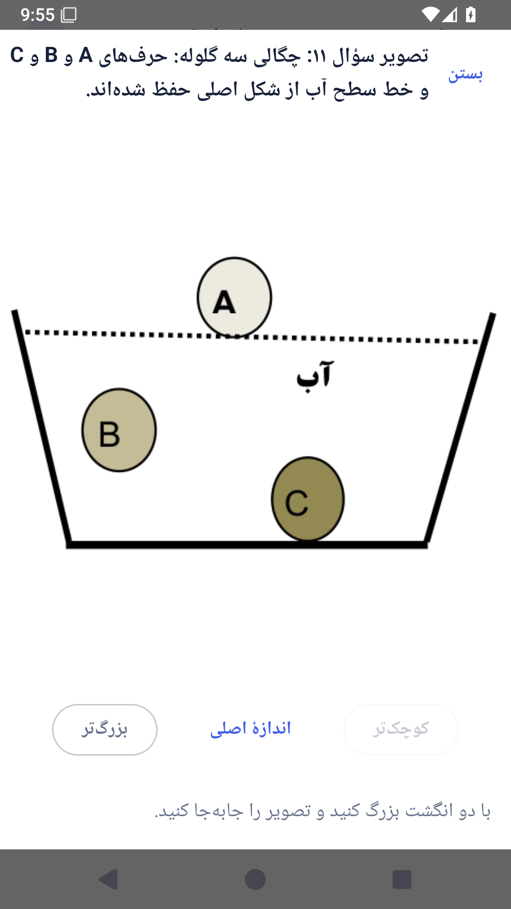
تلاش اول: راهنمایی ۱ و پاسخ قفلشده
تلاش دوم: راهنمایی ۲ و امکان دیدن پاسخ
تصویر پاسخ پس از تکمیل همه قسمتها
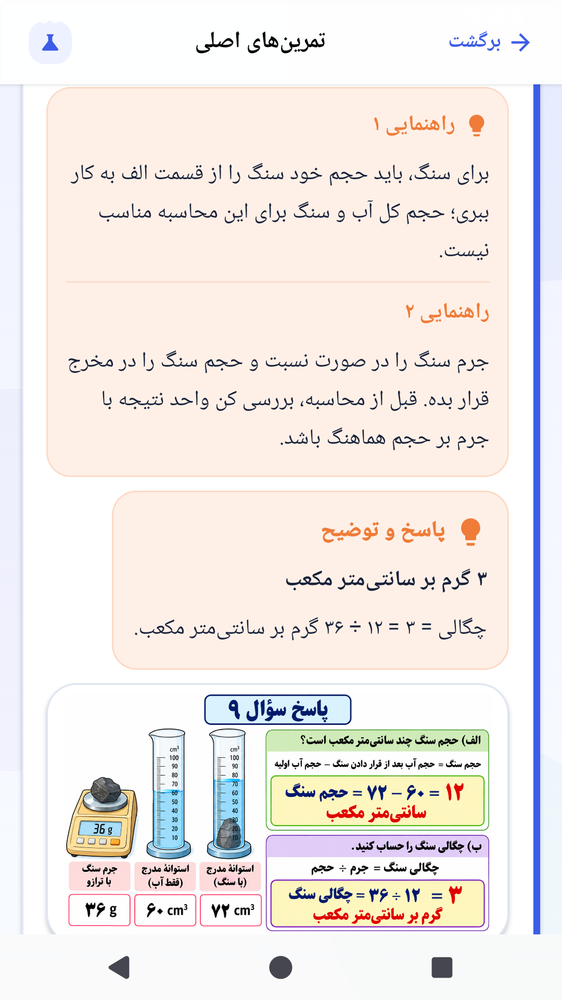
روش بررسی و جایگزینی
تصاویر موجود را با سؤال و صفحه اصلی مقایسه کنید.
در صورت نیاز، تصویر بهتر را با همان نام در پوشه question_images جایگزین کنید.
حرفها، عددها و جای اجزای مورد اشاره در سؤال را حفظ کنید؛ مخصوصاً A، B، C و شماره شکلهای ۱ و ۲.
پوشه اصلاحشده را ZIP کنید و ارسال کنید. برای تصاویر جدید پاسخ، نام پیشنهادی جدول را به کار ببرید.
ابهامهای خود منبع
فصل ۲ سؤال ۱ بخش b: طول کمیت است؛ متر یکای طول است. عبارت اصلی کتاب حفظ شده و توضیح علمی در بخش تعاملی آمده است.
فصل ۲ سؤال ۹: تصویر اصلاحشده اکنون با متن هماهنگ است: ۳۶ گرم، ۶۰ و ۷۲ سانتیمتر مکعب؛ حجم ۱۲ و چگالی ۳.
چهارگزینهای ۵ فصل ۲: گزینه ب در کتاب ۲٫۳۶ گرم است؛ علامت / به ممیز تبدیل شده تا عدد با تقسیم اشتباه نشود. پاسخ ب، مطابق پاسخنامه، حفظ شده است.
فصل ۱ سؤال ۷: تعبیر «ضعیف شدن چشم» به «خستگی چشم و کمتحرکی در استفاده طولانی و نامناسب» دقیقسازی شده است.
روند دو تلاش و راهنما
پاسخ نادرست کامل اول، راهنمایی ۱ و پاسخ نادرست کاملِ متفاوت دوم، راهنمایی ۲ را نشان میدهد؛ سپس دیدن پاسخ فعال میشود. پاسخ ناقص یا ارسال دوباره همان انتخاب شمارش نمیشود. پاسخ درست اجازه ادامه دارد. وضعیت تلاشها هنگام برگشت حفظ میشود و پیشنویس قدیمی نمیتواند قفل پاسخ را دور بزند.
در سؤال ۱۲ فصل ۲، شماره ۱ ساعت و شماره ۲ زمانسنج است؛ در سؤال ۱۵، شمارههای ۱، ۲ و ۳ به ترتیب ترازو، استوانه و گروه نیروسنجها هستند.
دامنه نسخه بازبینی
فقط فصلهای ۱ و ۲ پیادهسازی شدهاند. سؤالهای اصلی به ترتیب شماره کتاب، جای خالیها به ترتیب متن، جدول به تفکیک ردیف و سؤالهای چندبخشی مرحلهبهمرحله هستند. گزینههای تعاملی سؤالهای باز برای آموزش ساخته شدهاند و متن اصلی کتاب بالای آنها حفظ شده است.